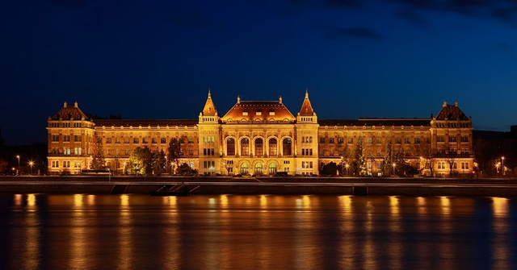

Célok
- Elsődleges célom jelenleg, hogy elvégezzem az egyetemet, ami egyre lehetetlenebbnek tűnik,de hátha.
- Későbbiekben szeretnék elhelyezkedni energetikai mérnökként, és lehetőleg olyan helyen, ahol megújuló energiaforrásokkal foglalkozhatok.
- De biztonság kedvéért van B tervem is. Ha semmi sem jönne össze, nyitok egy fonalboltot, ha esetleg te is megtanulnál horgolni szeretettel várni foglak.